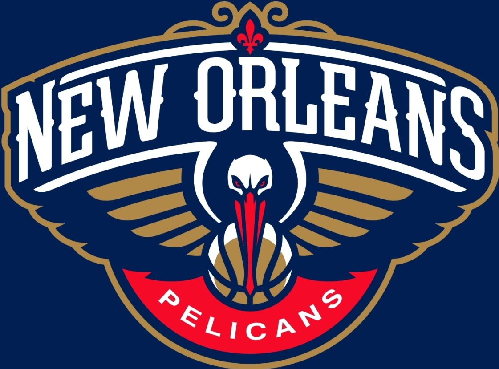
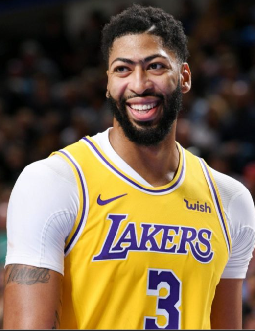
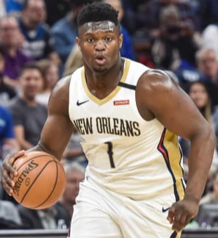

Pelicans
The New Orleans Pelicans are an American professional basketball team based in New Orleans. The Pelicans compete in the National Basketball Association (NBA) as a member of the league's Western Conference Southwest Division. The team plays its home games in the Smoothie King Center. The Pelicans were established as the New Orleans Hornets in the 2002–03 season when then-owner of the Charlotte Hornets, George Shinn, relocated the franchise to New Orleans. Due to the damage caused by Hurricane Katrina in 2005, the franchise temporarily relocated to Oklahoma City, where they spent two seasons officially known as the New Orleans/Oklahoma City Hornets. The team returned to New Orleans full-time for the 2007–08 season. In 2013 the franchise announced it would rename itself the Pelicans, effective after the conclusion of the 2012–13 season. The Charlotte Hornets' name, history, and records from 1988 to 2002 were returned to its original city to be used by the then Charlotte Bobcats franchise, which subsequently became the Charlotte Hornets in 2014. In 18 seasons of play since the original franchise relocated from North Carolina, the Louisiana franchise has achieved an overall regular season record of 671–771, and has qualified for the playoffs seven times. Their achievements include two playoff series victories and one division title.
Anthony Marshon Davis Jr. (born March 11, 1993) is an American professional basketball player for the Los Angeles Lakers of the National Basketball Association (NBA). He plays the power forward and center positions. Davis is a seven-time NBA All-Star and has been named to four All-NBA First Teams and four NBA All-Defensive Teams. In his first season with the Lakers, he won an NBA championship in 2020. Davis played one season of college basketball for the University of Kentucky, when he was first team All-American and the Consensus National Player of the Year. He also won the USBWA National Freshman of the Year, NABC Defensive Player of the Year and the Pete Newell Big Man Award. Davis led the NCAA in blocks and set Southeastern Conference and NCAA Division I freshman single-season blocked shots records. He led Kentucky to a National Championship and was named Most Outstanding Player of the NCAA tournament. Davis left college for the NBA after one season and was drafted as the first overall pick in the 2012 NBA draft by the New Orleans Pelicans, known then as the New Orleans Hornets, and was selected that summer to play in the 2012 Olympics. After his rookie season, he was named to the NBA All-Rookie First Team. The next season, he became an All-Star for the first time and led the NBA in blocked shots per game. He has since become the youngest player to score at least 59 points in an NBA game. In 2017, he was named the recipient of the NBA All-Star Game MVP Award after setting an All-Star Game scoring record of 52 points. Davis was traded to the Lakers in 2019. He has won gold medals with the United States national team on their 2012 Olympic team and 2014 World Cup team, making him the first player in basketball history to win an NCAA title, NBA title, Olympic Gold Medal, and FIBA World Cup.
Zion Lateef Williamson (born July 6, 2000) is an American professional basketball player for the New Orleans Pelicans of the National Basketball Association (NBA). He plays the power forward position. Following a dominant freshman-year stint with the Duke Blue Devils, Williamson was selected by the Pelicans with the first overall pick in the 2019 NBA draft. He was named to the NBA All-Rookie First Team in 2020. Born in Salisbury, North Carolina, Williamson attended Spartanburg Day School, where he was a consensus five-star recruit and was ranked among the top five players in the 2018 class. He led his team to three straight state championships and earned South Carolina Mr. Basketball recognition in his senior season. Williamson also left high school as a McDonald's All-American, runner-up for Mr. Basketball USA, and USA Today All-USA first team honoree. In high school, he drew national attention for his slam dunks. In his freshman and only season with Duke, Williamson was named ACC Player of the Year, ACC Athlete of the Year and ACC Rookie of the Year. He set the single-game school scoring record for freshmen in January 2019, claimed ACC Rookie of the Week accolades five times, earned AP Player of the Year, Sporting News College Player of the Year recognition, and won the Wayman Tisdale Award.